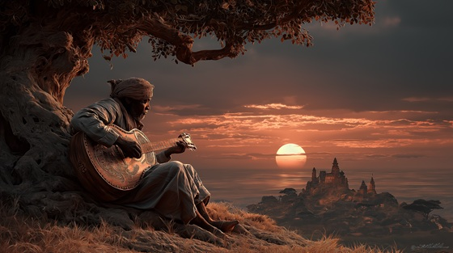

In the Dausi epic, Bida, once the celebrated son of Naa Gbewaa, begins to unravel. After proving himself in battle, he becomes consumed not by enemies, but by the slow, bitter ache of unclaimed power.
As his father ages, Bida's ambition grows — not as a rebellion, but as a restless hunger. He sees the throne before him, but it does not yield. And so, doubt becomes desire. The whispers begin — not from outsiders, but from within his own mind.
Bida is not portrayed as a villain in this tale — but as a human caught in the weight of legacy. His impatience and longing become the first crack in the foundation of Lagadu. In waiting for destiny, he contemplates shaping it... even at the cost of blood not yet spilled.
This moment is a pivotal shift in the myth — a prince no longer content to wait, and a kingdom unaware that its greatest threat sleeps within.
The Throne of Desire
He walks the halls his father built,
But every stone hums with his guilt.
The throne stands tall, yet not for him,
And silence grows in every limb.
How long must kings refuse to die,
While sons wither beneath the sky?
I see the crown and feel the flame,
It calls me loud, it calls my name.
No blood is spilled, no war declared,
But every breath is war I bear.
The people cheer a fading king,
But never feel the storm I bring.
Their love is loud — but not for me,
And envy grows where roots should be.
The drums now mock me as they sound,
Each beat a chain, each chant a crown.
I see the crown and feel the flame,
It calls me loud, it calls my name.
No blood is spilled, no war declared,
But every breath is war I bear.
A whisper comes — not from the gods,
But from the mirror, sharp and flawed.
"One death, one step, and all is yours."
A thought that chills, and yet implores.
What child of kings waits out the rain,
When fate is carved through mortal pain?
I see the crown and feel the flame,
It calls me loud, it calls my name.
No blood is spilled, no war declared,
But every breath is war I bear.
The stars burn slow, the fire creeps,
And even honor sometimes sleeps.
If fate demands a father’s fall—
Then crown me king, and end it all.
The throne still waits, a breath away,
But love is lost in shades of gray.
The gods watch on, the silence breaks—
A crown that burns is all it takes.